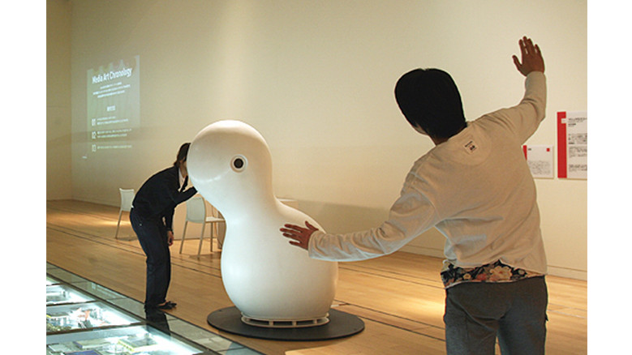

digital

岩井俊雄
http://www.ntticc.or.jp/ja/archive/works/marshmallow-scope/-どんな人
CGやメディアアートを中心に活動しているアーティストです。アナログとデジタル、映像と音楽とを組み合わせたインタラクティブな作品は国内外で注目されています。
-解説
ただ風景をカメラで写しているモニターかと思いきや、のぞいてみると、まわりの風景や人が，時間が行きつ戻りつするように変化したり，動いている人やものの形がゆがんだりして映ります。
-好きなところ
単純に見ていて面白い作品です。親しみのある形も好きです。違う場所の展示ですが、映像でみたほうがわかりやすいので載せておきますhttps://www.youtube.com/watch?v=ojW_wuux8Co